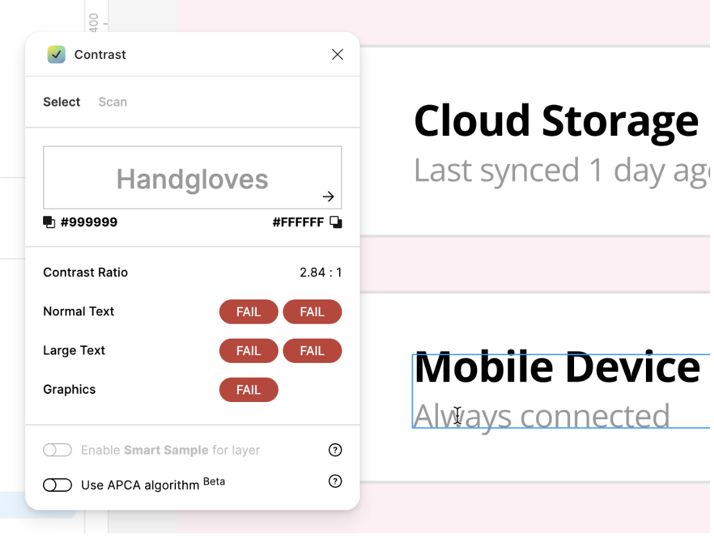

Data Dignity
An accessibility-first mobile app that empowers people to see, understand, and control their personal data in a fictional 2040 privacy-forward world.
UX Case Study · Fall 2025“Citizens now have their data, but they don't have a way to make sense of it visually, and that gap is exactly where Data Dignity lives.”
Data Dignity is a mobile startup filling that gap. The challenge was to design an accessible, clarity-first app that helps users visualize their data footprint across dozens of platforms and take meaningful action on their privacy settings, for all users, including those with visual accessibility needs.
My Role
UX/UI Designer
Course
Visual Design for UI
FA25-IN-HER-V500
Timeline
Full Semester, 2025
Tools
A world with data rights, but no tools to use them
In February 2040, President Veronica Penn signs the Digital Dignity Act into law, making it illegal for any entity to own personal data without explicit user consent. Citizens suddenly have their data back, but there is no simple way to see it, make sense of it, or control it.
Design Process
The project followed a full UX design process, not jumping straight to screens, but building understanding before pixels. Each phase fed directly into the next.
Grounding design decisions in credible standards
Two peer-reviewed and industry-leading sources shaped every accessibility decision in the design system.
{{ s.title }}
{{ s.body }}
Alex Martinez: the north star of every decision
Every design choice was filtered through one question: Does this work for Alex? Alex served as the fixed reference point across the entire semester, ensuring accessibility never became an afterthought.
Alex Martinez
28 · Freelance Graphic Designer
Deuteranopia (red-green color blindness){{ pc.title }}
A color palette built for deuteranopia, not despite it
The palette was chosen for maximum hue differentiation, deliberately avoiding red/green combinations. Every color pairing was tested against WCAG 2.1 AA contrast ratios before use in any screen element.
Multiple visual encodings, always
Good accessibility is not a single decision; it is a system. Rather than patching individual elements for color blindness, the design uses layered redundancy throughout: every piece of information is conveyed through at least two independent visual channels.
{{ e.title }}
{{ e.body }}
Three core screens, one design language
The final designs deliver three interconnected screens: a Dashboard for at-a-glance data awareness, a Data Management hub for controlling permissions by source, and a Settings screen for privacy preferences and accessibility options.
{{ s.title }}
{{ s.sub }}Onboarding
Onboarding flow designed and added: 3-screen sequence (Welcome → Privacy Promise → Ready to Begin) with progress dots.
{{ s.title }}
Four rounds of feedback, one progressively stronger design
The project moved through multiple distinct feedback cycles, from the first rough screens through peer critique and instructor zoom review to the final polished submission. Each iteration had a specific focus and produced measurable changes.
What reviewers said
Your clear card layouts with colour + text makes the information much easier to understand without relying only on colour.
Peer critiqueWhat is really working well with your design in version 3 is the layout of different sections by grouping them closer to each other, while having more gap from other section.
Peer critique
Contrast I had missed
A reviewer flagged that the grey "Always connected" text on the Data Management screen measured around 2.8:1, failing WCAG for normal text, along with the low-contrast "D" icon and grey toggles on white. In V3 I darkened those elements and added stroke outlines to the toggles.
{{ v.title }}
Custom icons designed in Figma, animated in After Effects
As part of the project's design system, a set of five custom icons was created from scratch in Figma using the Material Design keyline grid. Two of those icons were then animated in Adobe After Effects for the microanimation deliverable.
{{ ic.title }}
{{ ic.body }}
Animation process in After Effects
The App Icon and Import Icon were animated as looped sequences (1–1.5 seconds at 30fps, 400×400px compositions). This was the first time working in After Effects; the workflow went from SVG export out of Figma, through keyframe animation in After Effects, to final MP4 render.
{{ st.title }}
{{ st.body }}
{{ an.icon }}
What this project delivered
The final submission addressed every rubric requirement while developing genuine, transferable expertise in accessibility-first design thinking.
It delivered WCAG 2.1 AA compliance, a complete design system on an 8-point grid, multiple visual encodings, an onboarding flow and two After Effects icon animations, all backed by credible research and instructor feedback.
Accessibility as a design philosophy, not a checklist
The most significant shift this project produced was moving accessibility from a compliance exercise to a design instinct. Every moodboard choice, every spacing decision, and every chart type was filtered through the question: does this work for Alex?
That discipline created a parallel with ESL education: the same way an effective lesson makes content digestible for all learners regardless of language proficiency, a well-designed interface makes information legible regardless of visual ability. The principle is identical: reduce cognitive load, provide multiple pathways to understanding, and never assume a single encoding is enough.
Working with the 8-point grid, learning to layer visual encodings simultaneously, and iterating based on specific feedback all reinforced that good design is not inspiration; it is a repeatable, evidence-based process.
Thank you for reading my case study!
SAAS Platform for Job Seekers →
Portfolio Building Website